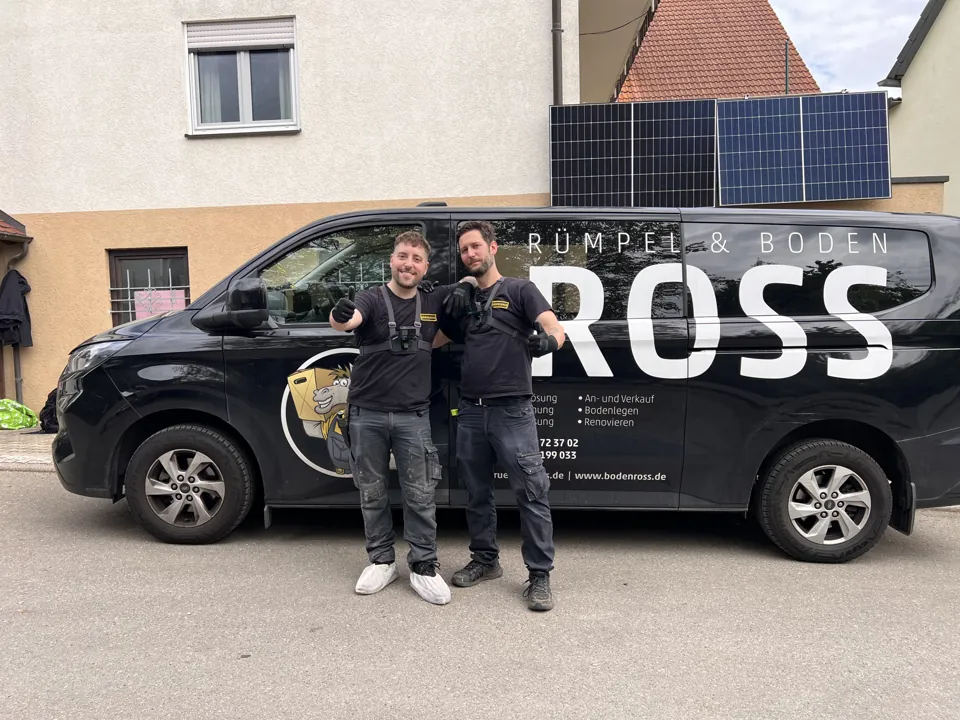
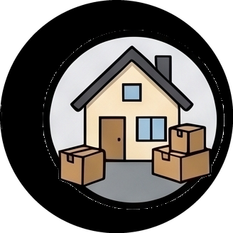
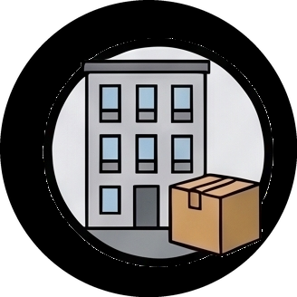
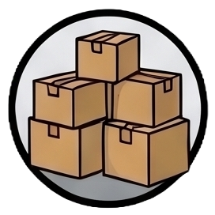
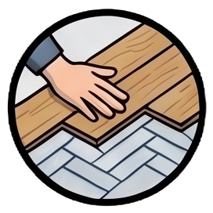

Entrümpelung in Stuttgart
Von der Wohnung in Vaihingen bis zum Keller in Bad Cannstatt: RümpelRoss räumt Wohnungen, Häuser und Nebenräume in ganz Stuttgart. Unser Familienbetrieb sitzt in der Liststraße 81. Sie sprechen direkt mit dem Team, das Ihren Auftrag plant.
Vorhaben besprechen · 0711 23178489
Wohnung räumen, Übergabe vorbereiten
Bei einem Mieterwechsel zählt nicht nur der leere Raum. Vor der Räumung halten wir fest, welche Möbel, Einbauten und persönlichen Gegenstände bleiben. Falls anschließend Renovierungsarbeiten oder ein neuer Boden nötig sind, können Sie beides mit uns besprechen. So lassen sich Räumung und weitere Arbeiten aufeinander abstimmen.
In allen Stuttgarter Stadtteilen
Dazu gehören:
Mitte, Nord, Ost, Süd, West, Bad Cannstatt, Birkach, Botnang, Degerloch, Feuerbach, Hedelfingen, Möhringen, Mühlhausen, Münster, Obertürkheim, Plieningen, Sillenbuch, Stammheim, Untertürkheim, Vaihingen, Wangen, Weilimdorf, Zuffenhausen.
Unser Betrieb sitzt in Stuttgart. Wir fahren Ihr Objekt nach Terminvereinbarung an; eine separate Niederlassung vor Ort betreiben wir nicht.
Wie läuft die Entrümpelung ab?
- Objekt und Wunschtermin nennen. Teilen Sie uns Adresse, Räume und ungefähren Füllgrad mit. Erste Fotos können bei der Vorbereitung helfen.
- Kostenlos besichtigen und Angebot erhalten. Wir prüfen Umfang und Zugang und vereinbaren einen verbindlichen Festpreis für die besprochenen Arbeiten.
- Räumen und besenrein übergeben. Unser Team trägt, sortiert und entsorgt. Verwertbare Gegenstände werden auf eine mögliche Wertanrechnung geprüft.
Was kostet die Entrümpelung?
Fläche allein genügt nicht für einen verlässlichen Preis. Füllgrad, Zugang, Entsorgungsaufwand und der vereinbarte Leistungsumfang zählen ebenfalls. Unser Preisrechner gibt nach Ihrer Anfrage eine unverbindliche Basispreis-Einschätzung. Verbindlich ist das Angebot nach der kostenlosen Besichtigung.
Unsere Leistungen in Stuttgart

HaushaltsauflösungEin gesamter Haushalt – mit Zeit für persönliche Entscheidungen. →
WohnungsauflösungRäumen vor Auszug, Neuvermietung oder Verkauf. →
Keller, Dachboden & GarageAuch einzelne Räume bekommen wieder Platz. → Messie-EntrümpelungDiskrete Unterstützung bei belastenden Wohnsituationen. → Innenausbau & RenovierungDie nächsten Schritte nach der Räumung mitplanen. →
BodenverlegungVinyl, Parkett, Laminat und Teppich. →Häufige Fragen
Was ist bei einer Wohnung ohne Aufzug wichtig?
Nennen Sie uns die Etage und zeigen Sie bei der Besichtigung Treppenhaus und Zugang. Auch sperrige Möbel und die Entfernung zum Fahrzeug beeinflussen den Aufwand. Wir berücksichtigen diese Punkte im Angebot.
Wie schnell ist ein Termin möglich?
Nennen Sie uns Ihren Wunschtermin bereits bei der Anfrage. Die Verfügbarkeit stimmen wir persönlich mit Ihnen ab. Die meisten Aufträge erledigen wir innerhalb eines Arbeitstages; große oder besonders aufwendige Objekte können länger dauern.
Was soll vor der Räumung erhalten bleiben?
Entscheiden Sie vor dem Einsatz, welche Erinnerungsstücke, Unterlagen, Möbel und Einbauten bleiben. Bei der Besichtigung grenzen wir den Auftrag gemeinsam ab. Ohne diese Abstimmung wird nicht pauschal alles als Räumgut behandelt.
Was dürfen wir für Sie anpacken?
Schildern Sie uns Ihr Vorhaben. Wir besprechen Umfang und Wunschtermin und vereinbaren bei Bedarf eine kostenlose Besichtigung.
0711 23178489 anrufen E-Mail schreibenFür Entrümpelungen: Ersteinschätzung im Preisrechner anfragen →